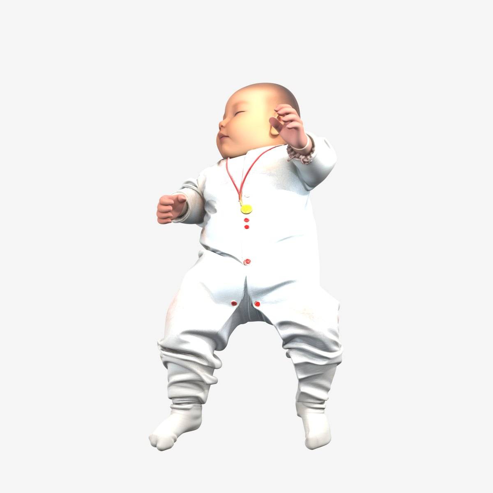
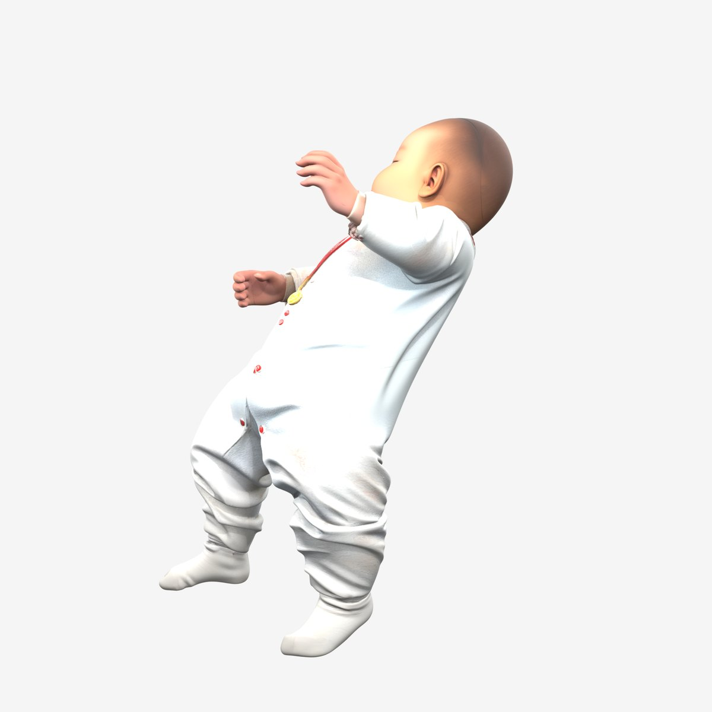
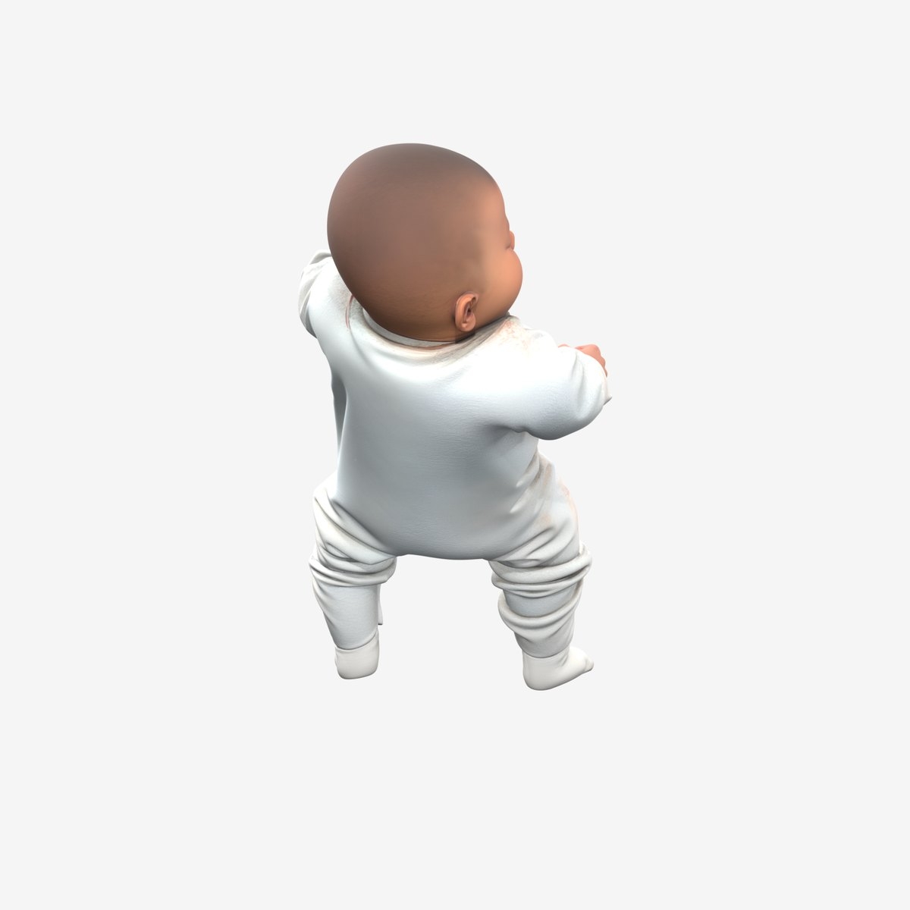
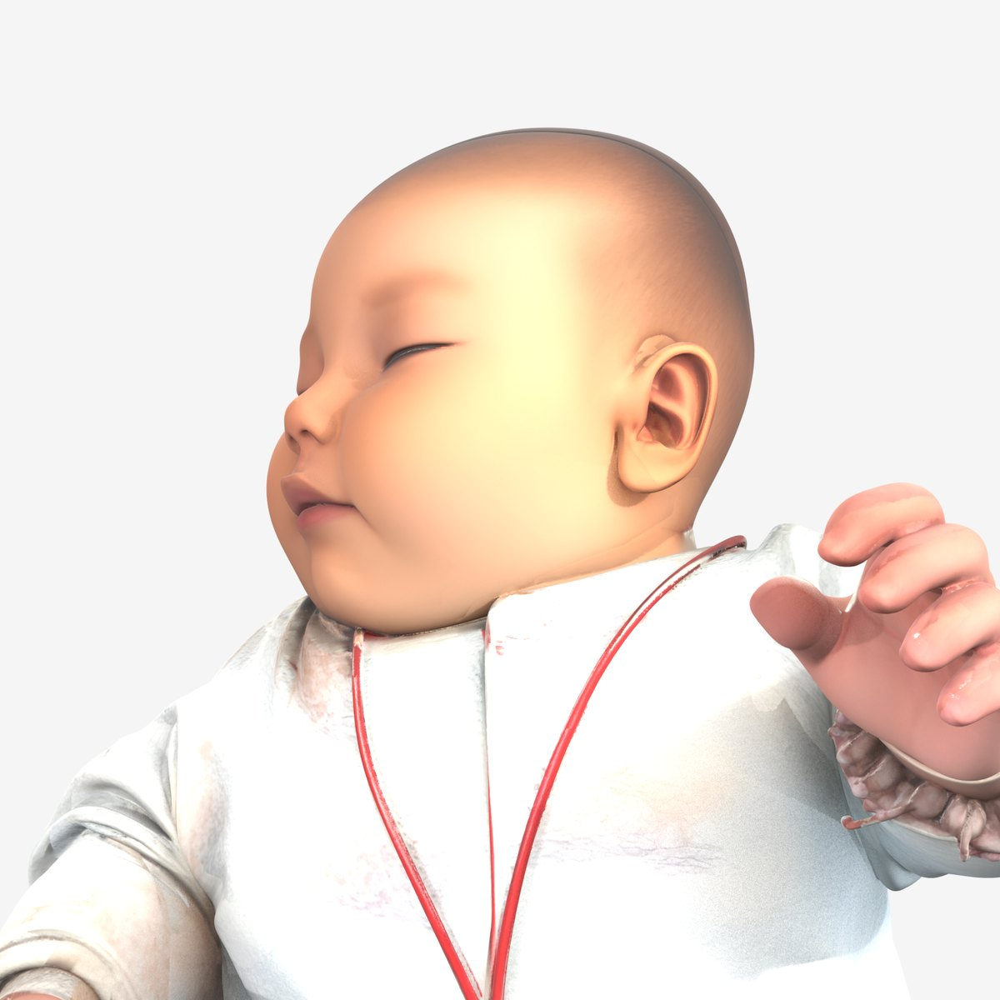
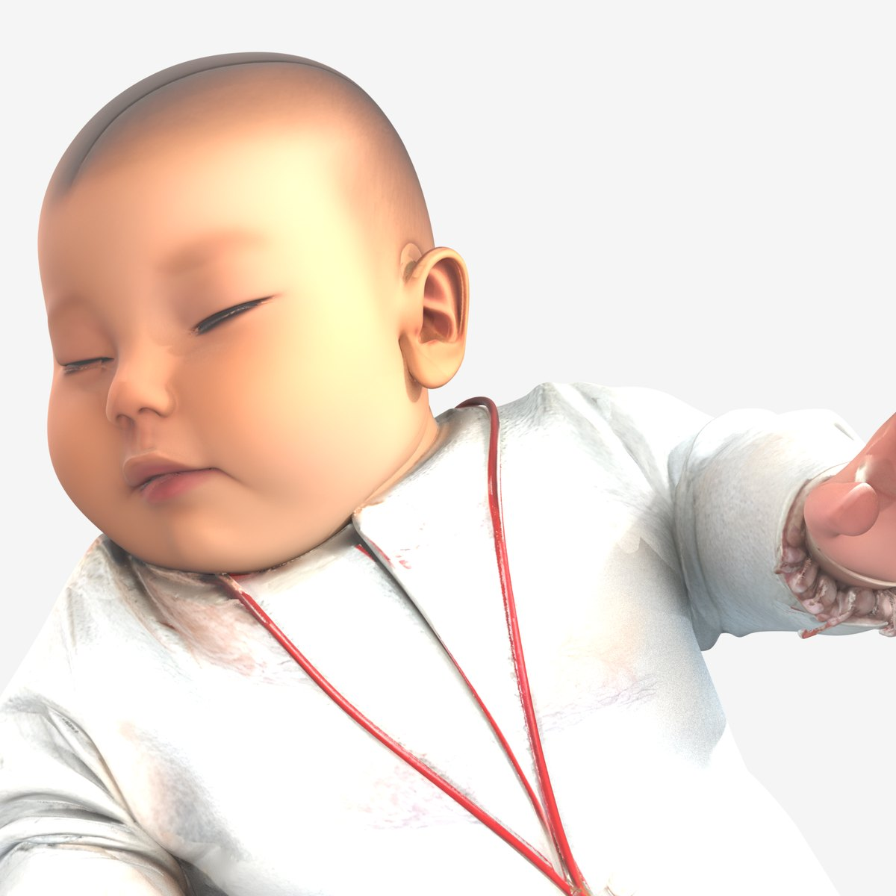
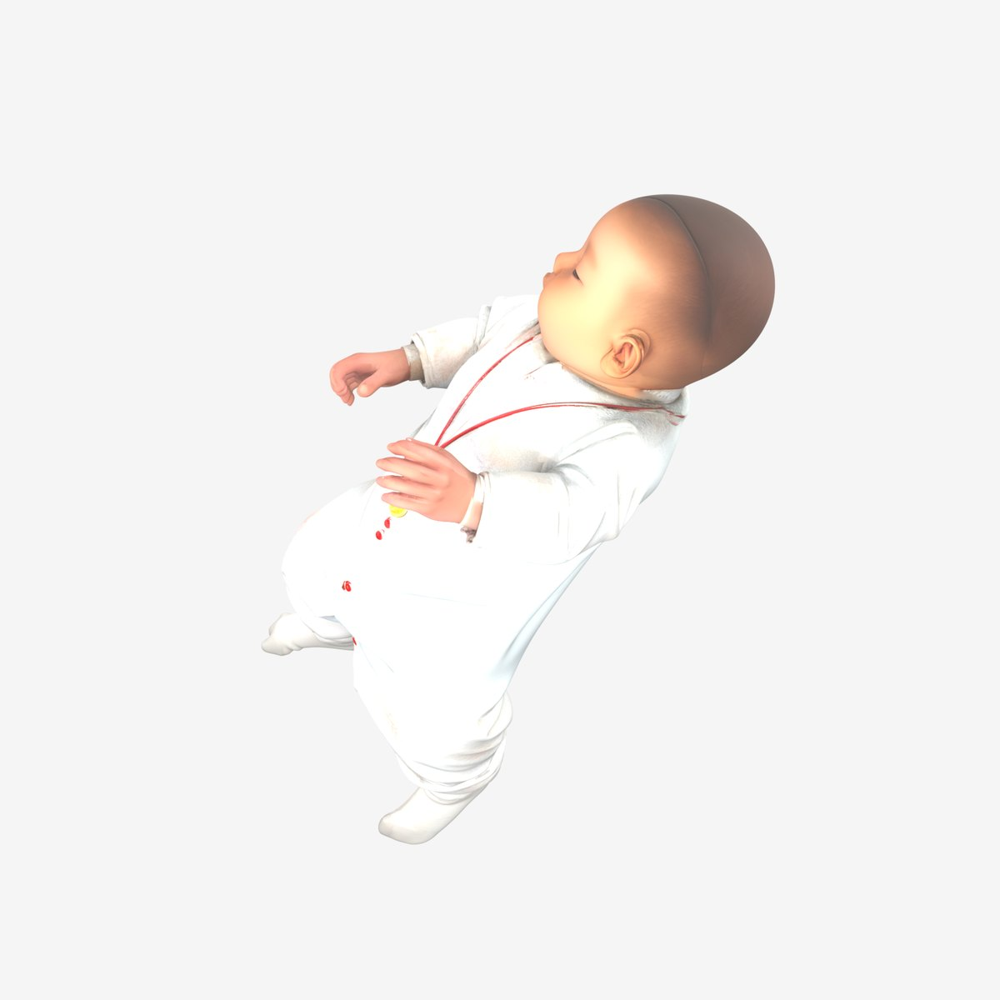

模型加载中…
拖动旋转 · 滚轮 / 双指缩放 · 双击复位
换个角度看
同一份模型，在 Blender 里换不同机位和光位渲染出来的效果。






怎么做的
没有建模基础，全程三步，加起来不到半小时。
STEP 01
拍一张照片
手机随手拍的一张躺姿照。单张图就够，不用环拍、不用扫描仪。
STEP 02
图生 3D
照片丢进图生 3D 模型，约三分半出一版带 PBR 材质的模型。背面和底部是 AI 补全的。
STEP 03
打光渲染
用 Blender 建了三点布光，绕一圈 8 个机位加 2 个特写渲染，压成 WebP 上网页。
想拿去玩？原始模型（glTF 2.0，带贴图）可以直接下载：
下载 .glb